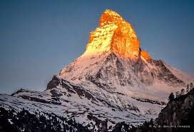
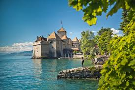
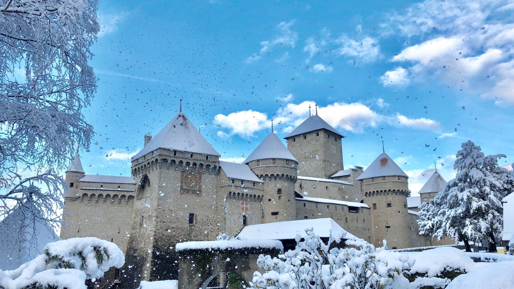
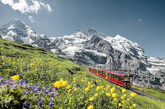
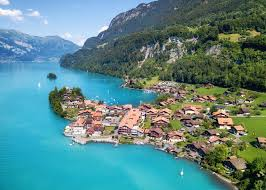
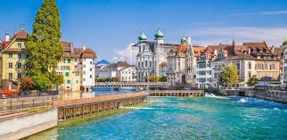
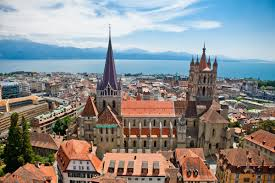

About Switzerland
Switzerland, known for its picturesque landscapes, is a country in Central Europe famous for its mountains, lakes, and charming villages. It is renowned for its high quality of life, precision engineering, and delicious chocolates and cheeses. Switzerland offers a blend of cultural influences from its neighboring countries, making it a unique and diverse destination.
Top Attractions
- The Matterhorn
- Lake Geneva
- Château de Chillon
- Jungfraujoch
- Interlaken
- Lucerne
- Lausanne

One of the most iconic mountains in the Alps, perfect for skiing and mountaineering.

A stunning lake surrounded by vineyards and the city of Geneva, offering boat cruises and water sports.

A beautiful medieval castle located on the shores of Lake Geneva.

Known as the "Top of Europe," it offers breathtaking views of the Alps and is accessible by a scenic train ride.

A popular resort town nestled between Lake Thun and Lake Brienz, known for adventure sports and stunning scenery.

A picturesque city located by Lake Lucerne, famous for its preserved medieval architecture and stunning mountain views.

A vibrant city on the shores of Lake Geneva, known for its Olympic Museum and beautiful old town.